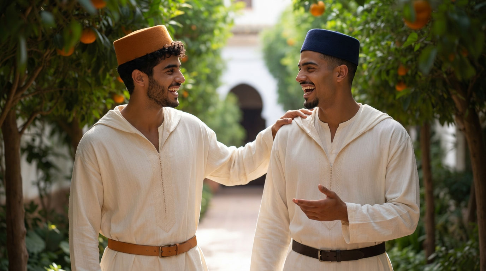
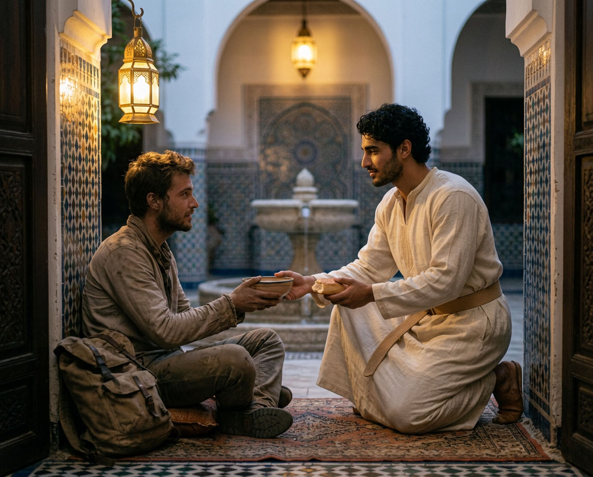
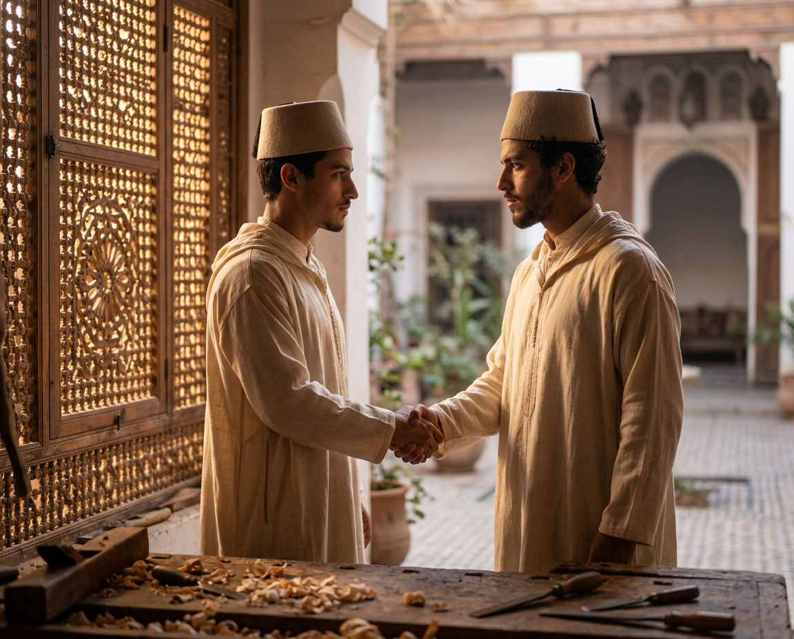
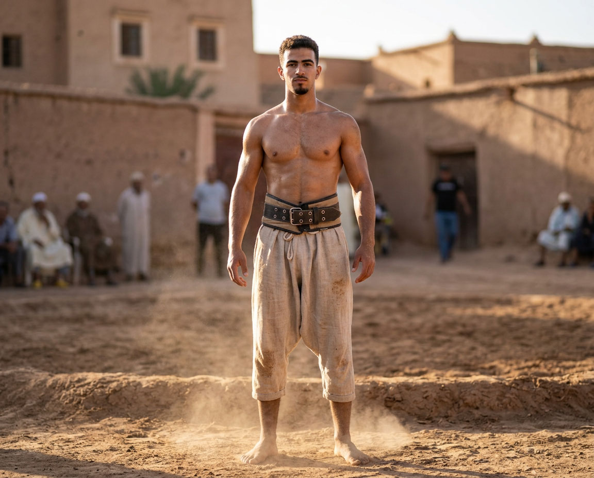
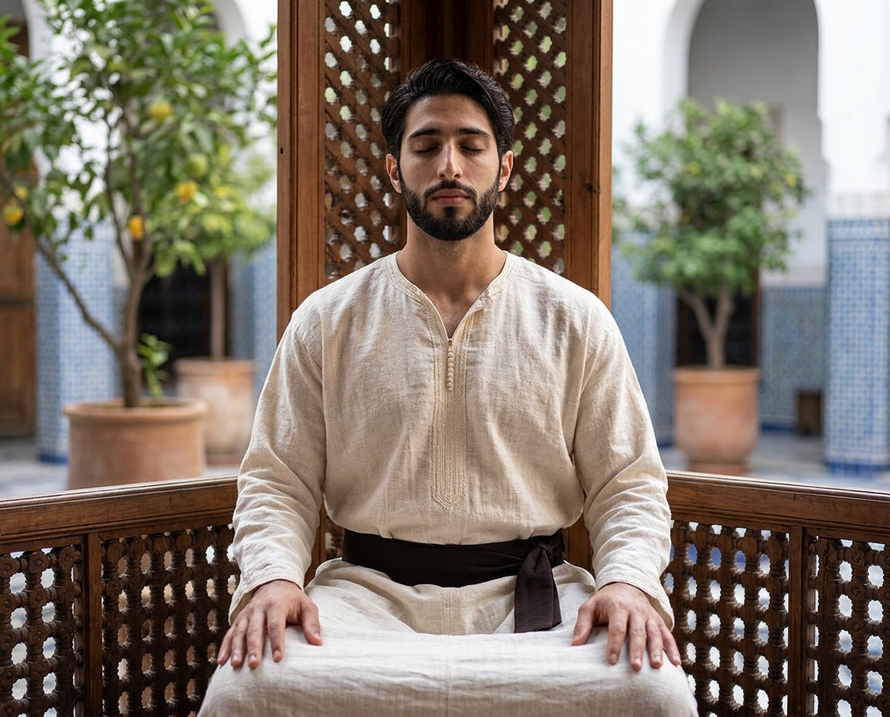
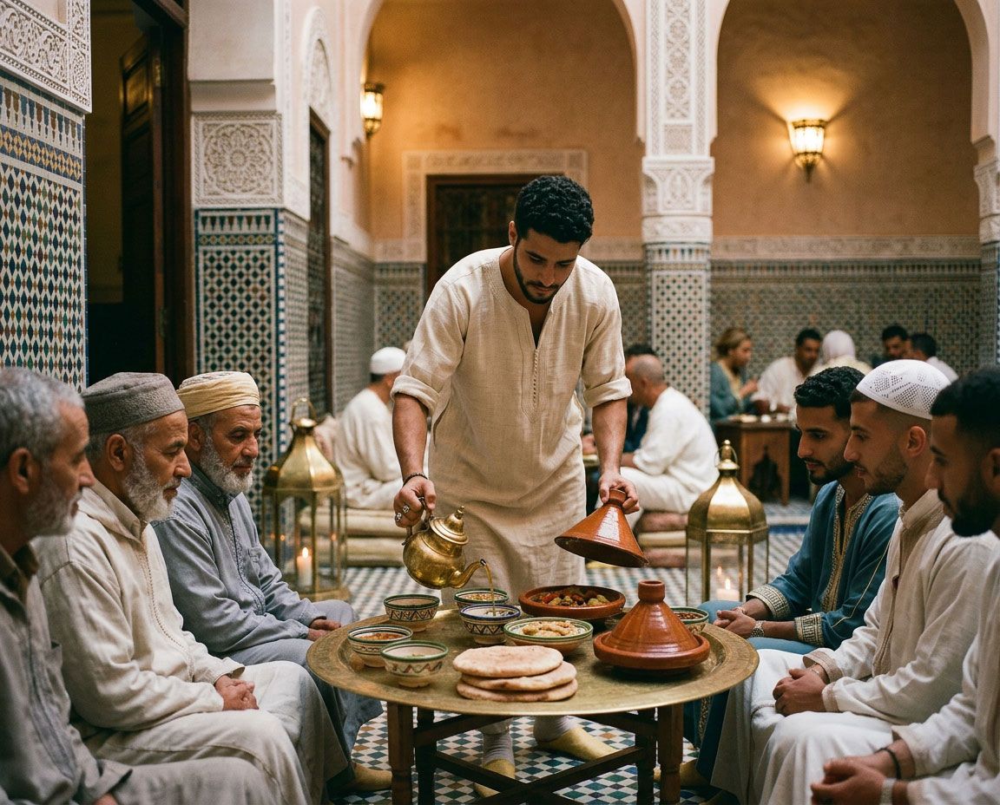
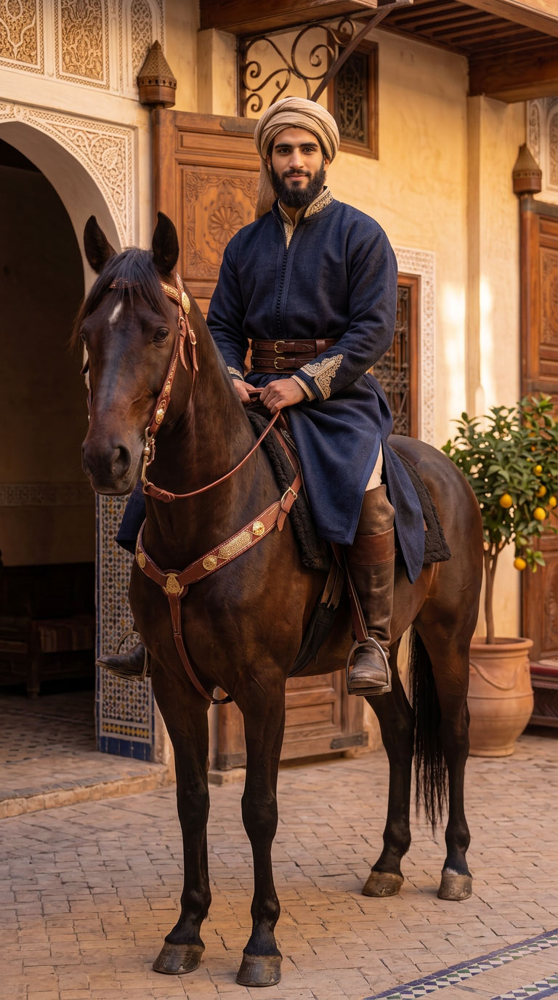

Futuwwa
الفتوة
L'idéal qui donne forme et direction à Riad Al-Uns.

LE NOM ET LE SENS
Le fata et sa qualité
Fatā (فتى) signifie « jeune homme ». Futuwwa est la qualité du fatā — non la jeunesse au sens de l'âge, mais une disposition intérieure : la capacité d'être généreux jusqu'au sacrifice de soi, loyal jusqu'à la mort, courageux sans vanité, maître de soi avant de l'être des autres.
Dans la tradition classique, la futuwwa n'est pas un sentiment. C'est une voie — avec ses règles, ses degrés, ses signes, une éthique du corps et de la parole, et une initiation.
RACINES
Une histoire, pas une légende

La futuwwa naît en milieu urbain abbasside et se développe entre le Xe et le XIIIe siècle. Elle s'organise en confréries de jeunes hommes — souvent artisans, parfois soldats ou gardes urbains — unis par un pacte de fraternité et un code de conduite rigoureux.
Le calife al-Nāṣir (fin XIIe – début XIIIe siècle) tente de l'institutionnaliser à l'échelle de tout le monde islamique. Des manuels de futuwwa apparaissent, décrivant les vertus requises, les règles de vie commune, le rapport maître-disciple, les signes extérieurs — ceinture, habit, façon de nouer le shadd — et les degrés d'engagement.
Beaucoup de ces confréries étaient liées aux corporations de métier (asnāf, أصناف). Le métier n'était jamais seulement une technique : il était le véhicule de transmission d'une éthique. Apprendre à travailler le bois, le métal ou le tissu, c'était apprendre à « tenir » — un geste, une parole donnée, une responsabilité.
La futuwwa dialogue intimement avec le soufisme, sans s'y confondre. Elle est plus terrestre, plus orientée vers l'action et le service dans la cité. Le fatā idéal est celui qui protège, qui donne, qui ne trahit pas, qui sait contenir sa propre force.
LES VERTUS
Un noyau stable
Les textes classiques insistent sur six exigences. Certaines — la loyauté, le courage, la discipline — sont développées plus en profondeur, à travers l'expérience vécue et la compagnie, dans Fraternité & droiture. Voici l'ensemble du noyau doctrinal :

سخاء
Sakha
Sakhāʾ — générosité radicale : donner avant d'être sollicité, donner ce qui coûte. Dans la tradition arabe préislamique, Ḥātim al-Ṭāʾī en est devenu l'incarnation absolue — au point que l'expression akram min Ḥātim (أكرم من حاتم, « plus généreux que Ḥātim ») reste, aujourd'hui encore, la mesure ultime de la munificence dans la langue arabe.

وفاء
Wafa
Wafāʾ — fidélité à la parole donnée, au maître, aux frères, au pacte — jusqu'à ce que cela coûte, surtout alors. Le poète préislamique al-Samawʾal ibn ʿĀdiyā, qui préféra voir mourir son propre fils plutôt que de trahir un dépôt confié à sa garde, a légué à la langue arabe l'expression awfā min al-Samawʾal (أوفى من السموأل, « plus loyal qu'al-Samawʾal »). Dans l'un de ses vers les plus cités :
إذ المَرْءُ لَمْ يَدْنَسْ مِنَ اللُّؤْمِ عِرْضُهُ
فَكُلُّ رِدَاءٍ يَرْتَدِيهِ جَمِيلُ
« Quand l'honneur d'un homme n'est souillé d'aucune bassesse, tout habit qu'il revêt lui va. »

شجاعة
Shajaa
Shajāʿa — le courage, non seulement face au danger mais dans la maîtrise de soi — la capacité de contenir sa propre force plutôt que de la déployer sans mesure. Al-Mutanabbī l'a formulé ainsi, dans un vers devenu proverbial :
عَلى قَدْرِ أَهْلِ العَزْمِ تَأْتِي العَزَائِمُ
« Les résolutions sont à la mesure de ceux qui les portent. »

صدق
Sidq
Ṣidq — véracité : la parole et l'acte coïncident, sans écart, sans exception de circonstance. Un hadith authentique (rapporté par Bukhârî et Muslim) le formule sans détour :
عَلَيْكُمْ بِالصِّدْقِ فَإِنَّ الصِّدْقَ يَهْدِي إِلَى البِرِّ
« Tenez-vous à la véracité, car la véracité mène à la droiture. »

النفس
La maîtrise du nafs
La force sans maîtrise n'est que violence. Le nafs — l'âme inférieure, le siège des pulsions et de l'orgueil — est ce que le fatā apprend à gouverner avant de prétendre gouverner quoi que ce soit d'autre : son atelier, sa maison, un jour peut-être une famille.

الخدمة
Le service
Le fatā existe pour les autres avant d'exister pour lui-même. Ce n'est pas un renoncement à soi, mais un ordre des priorités : la compétence, la force, la générosité n'ont de sens que mises au service de plus grand que soi.
Ces vertus ne sont pas des « valeurs » abstraites. Elles s'exercent au quotidien : à table, dans le travail, dans la prière, dans le silence, dans la façon de parler et de marcher.
CE QUI SE VOIT
Initiation et signes

La futuwwa traditionnelle prévoyait un passage formel. Le jeune homme était accepté, recevait une ceinture nouée d'une manière précise, parfois un habit particulier. Ces signes n'étaient pas des costumes — ils étaient la mémoire visible d'un engagement pris.
C'est ici que l'on comprend pourquoi, à Riad Al-Uns, le vêtement (Al-Kiswa) n'est pas accessoire. L'habit, la ceinture de grade, la façon de couvrir la tête, la distinction entre tenue de travail et tenue de solennité appartiennent à la même logique : rendre visible et constant ce que l'on a décidé d'être.
LE LIEN AVEC LE MÉTIER
Futuwwa et Dar al-Hiraf
Le lien avec Dar al-Hiraf est direct. Dans la tradition, le maître d'un art ne transmettait pas seulement des gestes techniques — il transmettait un adab (أدب), une manière d'être dans le métier et dans la vie. Le disciple apprenait à « tenir » son métier comme on tient une responsabilité : avec précision, avec patience, avec honneur.
C'est le cœur formatif du Riad : non pas produire de beaux objets, mais former des hommes capables de porter un métier et, un jour, une famille. Des hommes qui savent durer.
LE CORPS FORMÉ
Futuwwa et disciplines physiques

Les manuels médiévaux de futuwwatnāme codifiaient la lutte, le tir à l'arc et l'équitation comme disciplines formatrices au même titre que le métier et la prière — le corps entraîné n'est jamais séparé du caractère qu'il façonne. Ces trois disciplines n'étaient pas un simple entraînement physique : elles enseignaient au fatā la mesure dans l'effort, le contrôle du souffle avant celui du geste, et le respect de l'adversaire ou de la monture comme extension du respect dû à autrui.
C'est cette même logique que suit Dar al-Hiraf : la force sans mesure n'est pas la futuwwa, elle en est la négation. Un cavalier qui brutalise sa monture, un archer qui tire sans discipline intérieure, un lutteur qui cherche à humilier plutôt qu'à mesurer sa force — tous trahissent, à travers le corps, ce que la parole ou le métier pourraient trahir autrement.
L'équitation, le tir à l'arc et la Musara (la lutte) trouvent leur plein développement dans Furusiyya, la discipline chevaleresque arabo-islamique déjà présente sur le site.
POURQUOI AUJOURD'HUI
Une possibilité de forme

La futuwwa historique a presque disparu comme institution. Elle reste, cependant, comme possibilité de forme.
Riad Al-Uns n'est pas une reconstitution antiquaire. C'est une tentative contemporaine de retrouver la puissance formatrice de cet idéal au sein d'une communauté de jeunes hommes adultes célibataires : une prière qui structure la journée, un travail manuel qui discipline le caractère, une vie commune sous une règle de beauté et de mesure, une préparation à une responsabilité d'adulte.
La futuwwa, en ce sens, n'est pas un sujet d'étude. C'est l'horizon vers lequel toute la maison est orientée.
Le fatā n'est pas celui qui se sent jeune.
C'est celui qui a décidé de devenir digne d'être appelé homme.